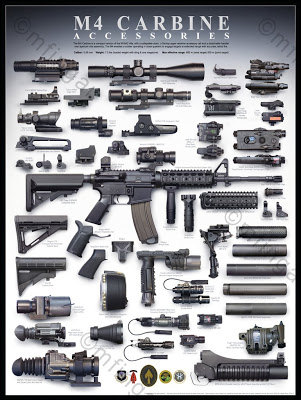
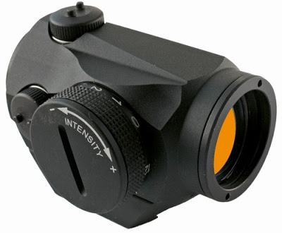

I'm going to start a thread here that I just KNOW is going to prompt fire and brimstone. I have one M-4gery (semi-auto flat-top short-barrel AR in 5.56mm). I may soon have another. One is assigned to my 16 year old daughter. The next one will go to my 18 year old daughter. I like the little carbine for a couple things, and a couple things only. It is chambered in a standard caliber easily obtainable and it is light and handy, just the sort of weapon for slight-statured youngsters and especially female youngsters.
Things I don't like about McNamara's rifle and the 5.56mm round it chambers:
The system, to put it bluntly, craps where it eats. This is the principal cause of over forty years of weapons malfunctions from South Vietnam to Iraq. Men have died because of it, when their finely tuned and equisitely fitting actions became fouled with a combination of burnt powder and environmental detritus -- mud or sand -- and turned them from full-auto rifles into single shots, or worse, clubs. My son so distrusted the M-4 he was issued during OIF-1 that he tried to get his 101st superiors to let him carry an AK-47. Request denied. He settled for an M-4 with an M-203 40mm grenade launcher slung underneath. He KNEW the M-203 would work.
I never liked the recoil spring in the plastic stock, making the action far too susceptible to catastrophic failure. The fixed stock version of the AR-180 (I used to own a Costa Mesa Armalite) seemed to me to be much more sensible -- reliable piston action and even if you broke the folding stock off, you still had a working firearm. They were far cheaper to produce, as well.
I was always a fan of the full-sized cartridges -- .30-06 and 7.62 NATO -- and the absolutely reliable weapons chambered for them: the M-1, the M14, the FN/FAL and the H&K 91. What is cover to a 5.56 turns into mere concealment for a 7.62 NATO or .30-06.
In addition, the larger cartridge is able to out-range the smaller by a considerable margin, thus giving you a leg up on the "three hundred meter war."
All of that said, the fact is that the M-4 is here, and here to stay for a while, thanks to that iron rule of bureaucracy -- "This is the way we've always done it."
These observations were prompted by CAMPYBOB, a moderator over at AssaultWeb.net, who posted this article from Army Times back on 6 July:
Army acquires rights to M4
By Matthew Cox - Staff writer
Posted : Monday Jul 6, 2009 17:53:53 EDT
As of July 1, the Army has taken control of the design rights to the M4 carbine from its sole maker, Colt Defense LLC. Translation: With an uncertain budget looming, the service is free to give other gun companies a crack at a carbine contract.
The transition of ownership of the M4 technical data package marks the end of an era and Colt’s exclusive status as the only manufacturer of the M4 for the U.S. military for the past 15 years.
In late November, Army senior leadership announced the service’s intent to open a competition for a new carbine this fall in preparation for the June 30 expiration date of Colt’s hold on the M4 licensing agreement.
The Army is slated to finish fielding the last of its 473,000 M4 requirement some time next year.
Army weapons officials maintain that it’s good to have the option of inviting other gun companies to compete to make the M4 as it is now, if the need arises, said Col. Doug Tamilio, project manager for soldier weapons.
“We probably won’t do anything with it right now. ... We have what we need,” Tamilio said. “The good news is we will own it now; that gives us the flexibility to do what we need it to do.”
Small-arms companies waiting for the chance to compete for the Army’s next carbine view Colt’s loss of the M4 TDP as a new beginning for the industry and for soldiers serving in Iraq and Afghanistan.
“Now that the sole-source era is over, we hope to see free and open competition of any interim or long-term solution for the service rifle or carbine for the American soldier,” said Jason Schauble, vice president of the military products division of Remington. “Now there is a chance to get something better in the hands of the soldier. Why not do it? If Colt wins again, God bless them.”
Colt officials didn’t respond to a request for comment by press time.
Some in the small-arms industry say Colt’s 15-year control over the M4 is a natural part of the gun-making business.
“If a company designs and develops a product, they don’t do that for fun; they have a whole factory of people to feed,” said George Kontis, who is now the vice president of business development for Knights Armament Company but has worked for multiple small-arms firms since 1967.
“This is not anything new in history. It has always happened this way,” he said.
The next competition
For now, the Army is planning to begin a competition in October that could produce a new carbine by sometime in 2012, but there are no guarantees, weapons officials maintain.
Before that can happen, the Army’s updated carbine requirement — the document that lays out what the service wants in the future weapon — still has to clear the senior Army leadership and win joint approval, he said.
Funding is another uncertainty, he said. The Army can’t begin the request for proposal process this year if the fiscal 2010 defense authorization bill doesn’t include the start-up costs for the venture, Tamilio said.
“I don’t need a lot of money,” Tamilio said. “I think it’s less than $10 million for fiscal year 2010. ... It’s obviously tied into the president’s budget in 2010.”
Colt still owns the TDP for the M16 rifle, but its status as the sole supplier for the military ended in the late 1980s, when FN Manufacturing LLC won its first contract. The Army still uses versions of the M16, but stopped buying them when it decided to field M4s to all deploying combat units in 2006.
The M4 became the subject of congressional scrutiny in 2007 when lawmakers expressed concerned about whether soldiers had the best available weapon.
In November 2007, the weapon finished last in an Army reliability test against other carbines. The M4 suffered more stoppages than the combined number of jams by the other three competitors: the Heckler & Koch XM8; FNH USA’s Special Operations Forces Combat Assault Rifle, or SCAR; and the H&K 416.
Army weapons officials agreed to perform the dust test after a July 2007 request by Sen. Tom Coburn, R-Okla. Coburn took up the issue after a Feb. 26, 2007, Army Times report on moves by elite Army special operations units to ditch the M4 in favor of carbines they consider more reliable.
U.S. Special Operations Command decided to move away from the M4 in November 2004 when the command awarded a developmental contract to FN Herstal to develop its SCAR to replace its M4s and older M16s.
In November, gun makers from across the country attended an Army small-arms industry day in November designed to give weapons officials a look at what is available on the commercial market. There, Army Secretary Pete Geren announced that he had directed the Army’s Infantry Center at Fort Benning, Ga., to update the carbine requirement in preparation for a search for a replacement for the M4.
“If there are no significant issues, I think [the updated requirement] can move through” the Army validation process and receive the blessing of the Joint Requirements Oversight Council, Tamilio said.
If that happens, the Army plans to release a draft request for proposal to the small-arms industry in October and a formal RFP early next year, weapons officials maintain.
The first round of testing will likely begin late next summer and last though summer 2011.
Once a weapon is selected in late fiscal 2011, weapons officials hope to have operational testing and a full rate-production decision by late summer in 2012, Tamilio said.
One of the most critical parts of this process will be the three to five months between the draft RFP and the release of the formal RFP, when the industry has the chance to digest and understand what the Army wants in a new carbine, he said.
“Those discussions we have with industry will be vital to getting the real RFP on the street and that should really make for a solid competition,” he said.
Now, frankly, one of the neat things about the M-4 is all the gizmo's you can hang on it. It is the ultimate modularized infantry weapon. This poster gives you an idea:


Yesterday, I received a complimentary copy of the latest Army Times in my post office box, with an article on the cover titled Pimp Your Carbine from their regular column, Gear Scout.
http://militarytimes.com/blogs/gearscout/

Pimp Your Carbine
27 July 2009
Want to become a more effective rifle operator, or just spend a bit of that re-enlistment bonus on something less dangerous than a motorcycle? GearScout is here for you. We went to the units with deep pockets and 50,000 yearly round counts per man and asked them what they ran on their carbines.
We gave an open-ended survey to active-duty and recently retired career operators and trainers to get their desert-island list of carbine upgrades. We compiled the results using a point system and came up with this wish list, ranked in order or what they would add to their weapons first.
Operator’s Choice #1: Sight

The red-dot reflex sight has become the reticle of choice for close-quarters battle. Accurate under stress to about 300 meters, the sight goes with the carbine-length M4 like milk goes with cookies.


Operator favorite: Aimpoint Micro T1 ($650). When the Micro T1 came out at SHOT Show a few years back, it started showing up on everything: soldier's rifles, competition shooter's [ostols, probably even kids' slingsshots. Weighing in at only 3 ounces, it's 42 percent lighter than the M68 and the lightest battle sight out there. One set of batteries will last as long as five years continuously using a medium intensity setting.
Operator’s Choice #2: Light

You can't hit what you can't see. Better to flood a shadowy recess with a momentary blaze of light to look for bad guys. Suoer-bright rail-mounted LEDs with remote switches allow rapid identification of a target without affecting your weapon grip or readiness.
Operator Favorite: SureFire M600C scout Light ($425). The scout Light is the lightest (3.5 oz.) and most compact rail-mount light available in its brightness range. It's a simple, single-brightness LED that will light up a target at 150 meters while still providing good peropheral light. It runs on two CR123s for a couple of hours.
What they said: "Curing close-quarter battle, most buildings will have limited visibility inside, even during the day. A white-light illumonator, combined with the proper training, allows the war fighter the ability to maneuver on the enemy and rapidly enagege the threats accurately."
Operator’s Choice #3: IR Target Designator

U.S. troops do their best work at night, thanks to formidable low-light tech that lets you see the enemy before he can see you. Night vision goggles by themselves are a pain to use with optical sights. An infrared pointer lets you ID and aim in through NVGs and engage targets in total darkness.
Operator Favorite: Insight Technology advanced Target Pointer, Illuminator, Aiming Light. available only to military and law enforcement. The An/PEQ-15 delivers a visible laser pointer along with an IR pointer and IR illuminator that make a deadly combo when used with NVGs. The IR pointer is slaved to the visible laser for easy aiming. It runs from a CR123 for six-plus hours and, best of all, it's about half the size of the older AN/PEQ-2.
Operator’s Choice #4: Extended Rail

The 1913 Picatinny rail is the defacto mounting system since devices can be quickly and solidly attached or removed using cam levers or thumbscrews. Items are indexed using set spacing on the rail, and most items will retain a zero after remounting.
Early handguards were short and rail-less, meaning you needed expensive custom mounts for front-mounted accessories. Later came a short bolt on rails that gave a common mounting system and more real estate, but the rails were clamped around the barrel and that affected accuracy.
Recent rail systems are longer and free floating, meaning they attach to the barrel nut instead of the barrel. This single point of contact means no matter how many gizmos you mount on your heater, the weight won’t cause any barrel deflection or point-of-impact shift when shooting with a supported handguard. New alloys mean the guards can extend the usable area of a handguard considerably without effecting weight, stability or heat transfer performance.
What they said: “A free-floating handguard improves accuracy by isolating the barrel from external pressure. It provides a solid mounting platform for other accessories, keeps the front end light and feels more like a rifle than a giant Lego brick.”
Operator Favorite: JP/VTAC Modular Handguard ($175)
Ditch the cheesegrater and use all that space on your extended handguard to actually hold your carbine instead of a foregrip. The tubular handguard with user-mounted rail sections mean you mount small sections of rail where you want your devices and leave the rest light and clean.
Also mentioned:
Daniel Defense RIS II ($400)- One of the few free-float rail systems that offers a removable bottom rail that allows the mounting of an M203.
LaRue Tactical ($250-$300)- LaRue is a traditional-style handguard with a pin-indexed barrel nut and rails that hug the barrel for a lower profile.
Operator’s Choice #5 Sling

Too many service members consider a sling an afterthought, not really part of the primary weapon. But our operators told us a good two- or one-point sling can have a profound effect on the effective use of your carbine. Modern military operations call for an adaptable sling that accommodates fast roping and climbing while allowing quick and effective weapon presentation. No way this is going to happen with a Vietnam-era three-point sling.
One-point slings are popular because they keep your primary at the ready and allow lightning-fast transitions to your pistol. Adjustable two-point slings give you the ability to present quickly while making it easy to sling a rifle across your back and snug it down for climbing or fast-roping.
What they said: “As everyone knows, if you are moving with a single-point sling and don’t have at least one hand on the carbine, eventually you will catch a hot barrel in the legs or groin — and try climbing a rope or wall and see what kind of circus that turns into. The three-point sling is the best-kept secret in spec ops, and the secret is that it sucks.”
Operator Favorite:
Both the VTAC Sling ($35-$41) and the Blue Force Gear VCAS ($45-$105) were popular in our survey. Both two-point slings come from operational experience gleaned while working behind the fence at Ft. Bragg. The major difference is the adjustment system. The VTAC has a loose tail that you pull to tighten and a stout, spring-loaded buckle tab you pull to loosen. The VTAC is designed to snug up during engagements to make a more stable shooting platform. The VCAS has no loose tail and uses a custom sliding buckle on a loop to gather or loosen the sling. Both slings offer a balance of adjustability and simplicity that have proven equally popular across SOCOM.
Operator’s Choice #6 Trigger

When it comes right down to it, a shooters most intimate point of contact is the trigger. So it makes sense that some of our participants tossed the stock-heavy GI triggers and installed precision two-stage jobs that enhance the feel and accuracy of their weapon. Two-stage means you pull through the first stage up to the break point, then snap through to fire. Upgraded trigger groups provide a more consistent and predictable break, but some aftermarket triggers are too light — great on the range but dangerous in combat. Do your homework on this one.
What they said: “Geissele SSA trigger, the best there is. Non-adjustable, drop it [in] to enhance hit probability, especially in the mid-range under stress.”
“Most factory triggers are not that good out of the box. No one makes a better, more reliable trigger group than Geissele. They hold their products to exacting standards.”
Operator Favorite: Geissele SSF ($250)
Hard to find and harder to pronounce (Guys-Lee), this is a drop-in, two-stage trigger with no adjustment. The pull is set at the factory and remains constant for the life of the trigger. The SSF is designed for combat and has been praised for its simplicity and durability. The SSA ($175) is the non-select fire version of the drop-in trigger .
Operators Choice #7 Back Up Iron Sights

Although you can find photos of cracked, shot and crushed Aimpoints and EOTechs that refused to die, one day those iron sights are going to save your butt. There’s only one trait to consider here: Reliability. The rear sight will likely be folded obediently beneath your optic until you really need it. At that point you want it to flip up without extra button-pressing or knob-twisting. You also want it to be able to hold a zero and not pop up when it’s not needed. Same goes for the front, but some guys roll with a non-folding front sight so they can aim over the top of their optic for really close fights.
What they said: “If your primary sight uses batteries, eventually it will have an electrical problem. I hope that when it happens, it’s not when you’re fighting for your life. But if it is, BUIs and training will hopefully allow you to prevail.”
Operator Favorite: Troy Folding BattleSight set ($250)
Troy was widely chosen as the backup iron sights of choice. They stay closed until needed and flip up easily with no controls. Folding requires a hefty button press so they won’t fold until you want them to. Once they are open, it’s going to take a 1000 lb accident to shear the cross bolt holding the sight up.
Made from aluminum and stainless steel, they should last as long as your rifle. Mount them on a Picatinny rail, use a bullet tip to adjust in .5 MOA clicks and know they are there when you need them.
Operators Choice #8 Mags

Crappy magazines are one of the largest source of stoppages in combat rifles. Some guys swear by standard USGI mags and others won’t let anything but polymer in the mag well. The USGI mag is simple, but the alloy construction leaves the feed lips susceptible to damage from a drop or long-term wear. Once the lips bend out, it’s double-feed city. But they’re metal and they’ve been around forever. The other camp points to the reliability of the polymer mag, with feed lips that won’t bend out of shape and that keeps those rounds feeding smoothly.
What they said: “I shot over 40,000 rounds of carbine last year and the PMAG never once gave me an issue. I did absolutely nothing to maintain them.”
Operator Favorite: PMAG/MagLevel PMAG ($14.95/$17.95)
PMAGs were the only mags that our respondents brought up. At least three things distinguish the PMAG from the USGI mag: The polymer construction is tough. They’ve been dropped and driven over and still continue to feed smoothly. The unique self-leveling follower keeps things trucking upward inside the mag. The MagLevel version shows you how many rounds you or your battle buddy have left with a quick glance at the orange level indicator on the mag’s side.
(End of article)
**********************************************
Of course these mods add thousands of dollars to the cost of your rifle and by the time you hang all of them on the M-4, you're toting a weapon that weighs more than the M-14 series. (That said, if you find some of these laying on the trail and their former owners are past caring, you should at least know what they look like.)
Spaceage gimcrackery aside (and I must confess my eyes are so bad, I must now use an Aimpoint red-dot to hit anything), the rifle, as I said, is here to stay, probably until they come up with Captain Kirk's phaser rifle. Therefore, everyone should familiarize themselves with the system, its ins and outs.

To put on, take off and otherwise service all those doo-dads, you'll need some tools. This enables you to do all that without packing a toolbag.
AR-15/M16 MULTITASKER TOOL
Manufacturer:BROWNELLS
Price:$64.99
Pocket-Packable Multi-Tool With Everything You Need For Field Repair & Adjustment Of Your AR-15
Rugged, compact, fold-open tool contains an amazing array of tools to service your AR-15 and many popular add-on accessories, all in a package that’s barely 4" long when folded and fits in pocket, backpack, range bag, or the included nylon belt pouch. You get a castle nut wrench for collapsible carbine stocks, adjustment tool for four-prong A2-style front sights, 3/8" box wrench for accessory mounts from LaRue Tactical and others, angled carbon scraper with radiused tip, file with chisel-tip carbon scraper, 440C stainless Tanto-style blade with liner lock safety, extended-length needle-nose pliers, wire cutter, and a bit driver with five, interchangeable double-ended bits. Comes with 2 slot-head, 1 Phillips, and 5 hex-head bit tips, plus T10 and T15 Torx® head bits. Bits have a ball-detent locking system to ensure they stay securely in the driver. The Multitasker is made of hardened, tool-grade stainless steel, with a scratch-resistant, matte black hardcoat finish for exceptional strength, and grip panels of durable G10 fiberglass composite with checkered surface pattern for a firm grasp.
SPECS: Stainless steel, matte black finish, with G10 fiberglass grips, matte black. 4-1⁄8" (10.5cm) OAL folded; 6-7⁄8" (17.5cm) OAL extended. Includes 5 double-ended driver tips with rubber storage sleeve and black 1000 denier nylon belt pouch.
30 comments:
All I have to say is: "Sig 556"
More money, but more reliable (essentially a cross between an AK and an AR). Does NOT crap where it eats. Takes the same mags, and most of the same high speed, low drag add ons.
But it is heavier than an AR, though still light enough for females and teens to handle.
Try it.
If you insist on having a made by Mattel toy, at least change out the upper. That gas system is so crappy...I just do not have the words this mornin' to express my disgust with that system. Get an upper that has a gas piston. There are several out there on the market. Personally I like the Bushmaster system.
My .02
Bob
III
HEAR HEAR!!
I bought my 556 especially because it has the short stroke piston, and the magazine capability is great for battlefield pickup.
I would pay a few hundred dollars more for a SIG 556 and live, then cheap out and die. You get what you pay for.
All I have to say is MSAR STG-556 with Aimpoint Micro T-1 and Urban ERT sling.
http://urbanertslings.com/mistg556urhy1.html
Standardizing on the M-4/M-16 allows the Army to recruit smaller minimum-sized, and weaker minimum-strength troops who are often female.
The plastic mouse rifle is perfect for Air Force duty (as intended), but the US Army made a mistake in giving up the .30 cal black tip 150 grain as a standard bullet known to stop charging full-size enemy with one shot.
I love to hear that the FBI is finely tuning their AR-15's so that they can just barely penetrate auto glass and ever-so-slightly expand to take out the unarmored auto driver (without body armor) in the one specific situation that a .30 does almost every time. Tiny girl FBI Agents must be made equal to the big male Agents, or at least scale down the weapons to make it seem so.
The solution for the AR-15/M-4 platform: require gas pistons for new purchase after a phase-out period. Surplus the old guns through CMP (cheeep!) with semi-auto trigger groups (or missing auto-sear). No more cheap weapons for Central American drug lords via their puppet governments.
If civilians used their heads, they would realize that an effective battle rifle in .223 NEEDS to be select fire. Barred from select fire, .308Win becomes the minimum carry for a full-size man and tactics require aimed-fire only.
As was noted in the article, adding all the tac-toys to the rifle makes it heavier than a FAL or M-14. Spending the same money can shave ounces from a .30 rifle for a weight-sensitive person.
But, are we carrying or shooting our rifles? Both?
There's no free lunch, since weight reduction without added gadgetry adds recoil. We have to accept that the muscular ache price of putting bullets down range is far lower than the target pays.
Cheers.
I have to second the 556. However, ther are any number of good piston designs out there including the much maligned FN FNC, FN SCAR, H&K 416 and the plethora of piston uppers for the AR-15/M-4. All of them remove the DI chamber fouling issue.
The AR style weapon system has some major things going for it in addition to the modularity. Mag changes are incredibly quick, much faster than many other systems including the FAL, AK, AUG, etc... The cartridge, while light is, well light. It doesn't tend to beat you up and it is possible to dump a lot of lead downrange in a hurry and still be accurate. Even more so in a piston gun. Heck my 556 recoils just barely heavier than my 10/22.
This is another situation where the mission should drive the gear and there are plenty of missions where the 5.56mm carbine is the right piece of kit.
You can buy IR and UV designators from the Russians ... they could care less about this LEO-only business.
http://www.posp.ru/ls.html
Regarding "craps where it eats", I am going to toss a hand grenade in here and say this:
The direct impingement system of the M-4/M-16 is no more or less reliable than any other system, provided it is lubricated properly.
If you follow that old wives tale of using lube sparingly on your AR series rifle, it will malfunction.
Keep the bolt wet, use Slip 2000 or EWL, close the dust cover and keep it closed as much as possible, and it can go thousands of rounds between cleanings, if mechanically sound.
I have done this personally, and it works.
One trainer I know of (and have taken training from) has a Colt 6490 loaner gun (students use it almost exclusively) that is approaching 15k rounds fired through it and never been cleaned.
I'm surprised that none of the commentators have mentioned the new Ruger SR-556 rifle.
16" barrel, supplied from the factory with a Troy rail system and folding front and rear backup sights,
It also comes with three Troy handguard covers so the railed forearm can be gripped without getting your hands shredded, three Magpul PMags, and a Ruger emblemed soft-case with accessory pouches.
And the best part: it's a gas-piston design that's adjustable.
MSRP is $1995, but my local shop is selling them for $1550+tax.
I'd rather have the Ruger than the SIG; I trust Ruger's choice of top-quality components far more than the cost-cutters in Exeter that ask a premium for cheap Chicom optics and lights on their higher end 556 models.
My turn to throw in my bigotry:
Para Ordnance has a direct gas system (DIGS) that works well and is a modification of the stoner system and runs cooler and cleaner due to a partial redesign of the hows of the direct impingement including a significant reduction of gas that makes it to the deep internals for you "craps where it eats morons".
THE BOLT IN AN AR IS A PISTON. Having an extra piston in a rifle doesn't help anything.
There were reliability problems, they have been solved without gas piston uppers.
I'm sure there is a US government conspiracy to develop the ability to shoot down incoming ballistic missiles but plan on equipping their soldiers with non-functional rifles...it's just like the russians sending WW I troops into battle with wooden mock rifles no doubt.
If you want to complain about a stupidly designed assault rifle, go play with a SA-80. Short stroke gas piston system and a Jam-O-Matic even after Enfield went to Belgium and Germany for help plus you get armpit magazine changes and all the other hassles of a bullpup.
I've got ARs, AUGs, STGs, various AR uppers, and the basic stoner design works just fine if you run it the way it was designed to be run, don't use shit steel case ammo in it to break your extractors and laquer the chamber, and occasionally do a detail strip. A well built and well maintained Stoner pattern rifle is as good as any assault rifle platform in the world. If your unit armorer sucked and/or you didn't look after your rifle, YOU ARE/WERE A MORON, the rifle isn't at fault.
How about some reading from a person that is well respected in the gun writing community and operated with them for years?
Mad Mike Covers the issue as well as anybody and he also has a wicked way of twisting the knife in stupid bigoted pukes.
As for battle rifles if you want to go bigger, Give me a Galil or R-1 through 4 rifle or even one of my M1 Garands before a Sig 556.
The Israelis and South Africans actually FIGHT WARS. Sig sells overpriced heavy junk with crap ergos. There's 9 on the shelf at my local High End gun dealer right now that have been there forever in the same shop where the ARs fly off the shelves and people buy Purdeys and 25k double rifles so they aren't still on the shelf because of price.
I've always had a problem with designing/mfg. a 6.5 pound carbine and then piling three or four pounds of extras on it to make it "right".
On the other hand I'm waiting for my MSAR, so what do I know?
emdfl
pdxr13 said: "If civilians used their heads, they would realize that an effective battle rifle in .223 NEEDS to be select fire. Barred from select fire, .308Win becomes the minimum carry for a full-size man and tactics require aimed-fire only."
+ 1!!!!!
It is a shame that some rifle imports were banned like the Korean Daewoo DR200 which may address some of the concerns you had with the Stoner AR reliability factor. It has also been said to be a cross between the AR and AK gas systems.
I purchased mine back when they were $425 and unlike the overly priced Sig rifle they take the AR M4 mags.
Cory
I'm gonna get some more AR-15's for the same reason I've got MS Windoze on my pc and a Ford/Chevy V-8: everyone and their brother has one (or 5) and there is lots of support. Common usually means "cost-effective" and at least minimally-functional. When the objective is to "get stuff done", use what works regardless of the excellent "graceful" over-optimizations that you can spend more money on.
The big Army thinks like this. Special Forces can have whatever it wants for whatever mission.
South Africans, Rhodesians, and Israeli ground forces used FAL's, and have provided us with $5 magazines and smart R-1 web gear.
This is the sweet-spot for a semi-auto-only 5'-10"+ American.
The next AR-15's will be 110 pound/5'-2" optimized because the .30 rifles are too big/too heavy/kick too much. Girls like good sights just as much as I do!
Cheers.
I have nothing against more powerful, heavier rounds than the
.223, or platforms that people prefer over the M4 style carbines. I use the AR carbine, because decades of experience with it makes it second nature to me. Everyone should find what works for them and practice with it. There is no one perfect rifle that will fit all people, but the Stoner design comes close and is easily modified to the individual.
Call me silly, but I think it's important to know most of the facts concerning the the M-4 platform prior to commenting on why we should or should not s-can the weapon system.
Stoners design was meant to solve some of the problems inherent with the gas piston system.
The distances encountered during WW II, Korea, Vietnam + several non-American involved conflicts were short to mid-range, so a smaller cartridge was the logical answer. It enabled the soldier/marine to carry more ammo to weight + all the other crap which in turn allows the "combatant" to engage the enemy for a longer period or sustained engagements. simply stated, whomever has the most ammo ( and avoids getting killed)wins. It reduces the strain on the logistics train ( deliver 1 ton of ammo at x ammount of rounds + water, food, medical supplies ETC) vs the diminished number of rounds for a larger caliber which increases the need for resupply.
In the end it all comes down to hitting what you aim at, if you can't hit it with a 5.56 you sure as hell won't hit it with a .308!
Clean your weapon, unless you consider it a waste of time, after all, the only thing riding on the functioning of your weapon is your life.
Just for the record, and to show my bias, I assemble m-4's as a hobby. They don't (to this point) malfunction. 10 years as an Infantryman instilled in me the discipline to clean my weapons after each use. My .02 cents
as an aside, love the Sipsey street Blog!! keep up the good work!
I don’t have to worry about crawling through the mud with an AR15’s or M4’s since I can’t afford one.
The 223 round is to light to my way of thinking. Plus I’ve listened to enough Vietnam vets to know the 223 /M16 platform can get you killed in less than desirable conditions.
My suggestion is the poor mans solution the SKS.
P.S. Mike you’re not opening a can of worms pointing out the short comings of the AR platform, we need info.
I would suggest using a good quality lube oil instead of a grease type lube product.
j_nosfarato says: "In the end it all comes down to hitting what you aim at, if you can't hit it with a 5.56 you sure as hell won't hit it with a .308!"
While the statement is about marksmanship fundamentals, science does not back up the sentiment involved.
A .308 projectile will, in fact, hit a target when a .223 physically cannot for the same reason a .45 ACP can cut a card when a .38 can't. A .45 projectile only needs get within about four tenths of an inch to cut paper; a .38 needs to get within a quarter inch. The larger projectile is more forgiving and can be off a 'smidge' or two and still damage a target.
So the answer is simple physics - the diameter of the projectile involved determines if it will or will not hit the target.
No? Ok, cut a piece of paper the same size as a .223 diameter. Do the same with a .308. Place the piece of paper replicating the .308diameter over that of the .22 and you will easily see that when striking the exact same spot, the .308 projectile will make contact with mass present outside the .223's diameter that the .223 cannot make contact with.
So, let's say a soldier shoots his M-4 and his projectile grazes the shirt sleeve of an enemy soldier (cutting material but not skin). It won't inflict a wound, where as a .308 projectile on the same deflection and elevation would, in fact, inflict a wound.
Bottom line: All things being equal (point of aim, range, environment, shooter's personal ability) you will, in fact, hit with a .308 that which you cannot hit with a .223.
Just my .02 and offered from a perspective of friendly discourse...nothing more.
The Trainer
And ballistically speaking a 6.5 Grendel carries more energy past 300 yards than 7.62 NATO /.308 Win...
As to the mechanics of if you graze or not, how about we go back to the days of .45 caliber through .69 caliber projectiles. Maybe we can even send up guys in hot air balloons to spot for the shooters on the ground. Hell, Give everybody a 2 bore, it'll give them a better shot at not "just making a grazing shot.
Friendly discourse but I believe your "logic is flawed" and I've got .577s and .700s in the gun safe, personally along with 5.56/6.5/6.8/7.62s(both kinds)/and .30-06s as far as modernish Military weapons.
My .30-40 Krag has better odds of a hit than a M-4 according to your "grazing" calculations? You want a Krag or an M-4 on the modern battlefield?
What do I know? I think that the VZ-(NO NO NO NOT CZ, VZ)--52 in the original 7.62x45 Czech chambering was one of the finer battle rifles of the last hundred years.
All friendly, but I think you're wrong
Tom: Rather than quote your entire post, which offers some interesting, if not relevant points, let's do this.
1. The comparison was for .223 vs .308, not the 6.5 Grendel or .30-40 Krag or any other caliber or platform.
2. The statement in question was: "In the end it all comes down to hitting what you aim at, if you can't hit it with a 5.56 you sure as hell won't hit it with a .308!"
3. The example of the .45 vs .38 was to further underscore the physics of mass & volume.
4. Your inferences that using a .308 or a .45 ACP is 'going backwards in time' to the technology used during the War of Northern Agression or earlier are just not relevant to the original comment under dicussion.
Glad we're on the same side!
Let us step back a moment and look at my statement again. Perhaps I should have said "hit and kill" what you aim at. A graze, although painful, will not keep a man out of the fight. We don't want to lose the forest for the trees. The point was EVERYTHING that prompted the change from 7.62 standard to 5.56. Weight to rounds, distances involved and ease of resupply (via friend OR foe). Every weapon system has its flaws, but as long as 5.56 is standard NATO issue and the U.S. Military insists on the M-4 platform the ease and acquisition of spare parts and munitions on the battlefield will be what dictates my personal, again my personal choice for a battle rifle. Lets try not to get wrapped around the axle on this subject, survival is the issue.
I made no such inference such as:
using a .308 or a .45 ACP is 'going backwards in time' to the technology used during the War of Northern Agression or earlier are just not relevant to the original comment under dicussion.
I was inferring that you ARE dancing with angels on the heads of pins stuff saying in a situation that is essentially considering marksmanship irrelevant as you are just using the flight path, sort of as the flight paths would be different, of a projectile, in your own words, a .308 might make a more serious wounding shot grazing a person than a bullet nominally 2mm smaller in diameter following the same trajectory, also your words.
So, let's say a soldier shoots his M-4 and his projectile grazes the shirt sleeve of an enemy soldier (cutting material but not skin). It won't inflict a wound, where as a .308 projectile on the same deflection and elevation would, in fact, inflict a wound.
Bottom line: All things being equal (point of aim, range, environment, shooter's personal ability) you will, in fact, hit with a .308 that which you cannot I would suggest MIGHT NOT here hit with a .223.
Call me when you sort out making the trajectories of 5.56 the same as 7.62 rounds. I'll give you a tip, you aren't going to make it happen. They won't shoot to the same point of aim at any range but coming directly out of the muzzle.
So we are back to people needing to know how to shoot and if they are not good shots, lots of smaller ammo they can carry will give them better odds in the field than smaller amounts of larger heavier ammo.
I put the hyperbole related to 19th century warfare ( I wasn't limiting myself to the war of northern aggression in my sweeping prose) in the first post because it was funny and prescient in my derivation of what you were trying to say. Now you have the stripped down version of why I think your viewpoint is wrong.
And if you take a piece of paper .223 in diameter and then take a .700 caliber piece of paper and do your put one piece of paper on the other test, I suggest that since we're eliminating skilled marksmanship here, we may as well give everybody .700 caliber assault rifles. Yeah the ammo is going to be heavy so they won't be able to carry many rounds (maybe have an ammo bearer for every rifleman???) and the rifles are heavy( Every rifleman has at some points wished he had a gun bearer anyway), but in your hypothetical uniform material grazing shot with a 5.56 projectile, the .700 will cause a grievous wound if it doesn't rip the whole arm off. Might get women who can't meet male training standards finally kicked out of the military too! If you think that'd be too drastic to do all at once we could do an intermediate battle rifle switch to say Barrett .416 or maybe one of the .338 Lapua semi-autos?
Cheers and rethink your position or not. The people that run all the major militarizes of the world disagree with you. If I were going to go by the purchasing selection of arms for soldiers advice I'm gonna pick the largest and most powerful armies in the world's choices over your idea, for the exact same technical reasons that they made the choices they did.
It's all a compromise.
You've got the compromise you like. I'm going with the compromises that seem to be working really well in the real world military.
It's a free country, buy what you want for yourself, I don't think you're qualified to suggest how to equip modern soldiers who trudge around in heavy body armor and helmets with heavy packs in places where it's 130 degrees a lot lately, nor do I think your plan would work well in the hedgerows of France near Normandy or on snow shoes in Siberia...Climbing mountains in Pakistan...I could go on but you get the point.
My point has been made. Still Friendly and I still think you are wrong.
Nobody's wrapped around the axle, as far as I know. Spirited and friendly disagreements are just that.
I hold no animous toward Tom or anyone involved in this discussion. We all have our own experirences and backgrounds that lead us to our conclusions.
Me? I'm a 7.62NATO guy...and that's after carrying the US M-16 and variants for a career in service. My choice.
Others don't agree, and I respect that. Hell, some of my best friends shoot .223's! :-)
I hope everyone understands this is just an academic discussion.
The thing is, there is a place for .308/7.62NATO (as well as 7.62x54), it just isn't in the hands of your average soldier who isn't much of a rifleman. If you're good enough to utilize 7.62 and it fits in with your MOS, you'll be issued one most likely anyway.
If you're thinking survival and insurrection on the non-government side, I'll take my scoped .338WinMag M1 Garand and reloading gear and collect all the .308s and .223s I want off dead jackbooted thugs.
In your hypothetical situation, .338 is bigger than .308 so it won't just scratch the guy's arm and it carries much more energy and I'd argue my air gauged match barrel and meticulous chamber is a sight more accurate than a M-14/M1A1.
Matter of purpose and compromises. There'd be no sense arming much of the regular army with .308 and you know that. Most of an army is the LOGISTICS TAIL, not fighting men, and many of the fighting men aren't the best either... "Amateurs talk about tactics, but professionals study logistics."--Gen. Robert H. Barrow, USMC
Irregular forces... different requirements on some levels but will likely be living off captured ammo stocks.
You like what you like, but will it work in the real world for anybody besides you and a handful of others?
Question not intended as an insult, but it's a valid question.
:-)
"You like what you like, but will it work in the real world for anybody besides you and a handful of others?"
Honestly, my original comments were not from the perspective of who should be armed with what. It was strictly focused on the comment, "if you can't hit it with a 5.56 you won't hit it with a .308". That's all. I just am not in the "the 5.56 is the best thing since sliced bread" camp. I guess that makes me a heretic dinosaur! :-)
But when it comes to your question, in my mind, it's a question of training balanced against mission requirements. If we spent a bit more time training our folks to shoot better, we might find that the added expense of a good .30 caliber rifle worth the time and trouble. Especially in those AO's where there are routine distances of 500 meters plus.
But, I'm not trying to justify my own opinion for those at the tip of the spear or in 'the rear with the gear'.
Better and smarter men than me, with lots more field experience, too, thankfully make those decisions.
As you say, I like what I like, and it effects me, my family, and friends. I can live with that.
Thanks for the discussion.
I enjoyed the discussion. Good points on both sides. Being in the company of thinking soldiers is reassuring.
We may not agree on technique, but we all have our rifles pointed in the same direction.
CorbinKale: DAMN skippy!! ;-)
Jay: I'm sorry for the loss of your father. I was a regular reader of his columns.
My favorite bread slicers are 6.5 Grendel and .338Winnie. I'm a heretic too. My 5.56/.223/.223AckImproveds but one AR upper are ALL PISTOLS that, I might add, are easily one handable and fun for long range enemy metal pigs, rams, and such as well as varminting and coyote zapping.
As to better training (and I HAVE TO ADD THIS HERE) and loads to be carried, we're back to the women in the military thing regarding loads and gear. No matter how much they want to be equal, outside of the odd exception, women are significantly weaker all around physically and are more prone to field and PT injuries, both.
Numbers don't lie and in physical sports competition they have seperate tournaments for the same reason.
A 115lb lady can be useful for a lot of things, but humping a serious load in the field isn't one of their strongpoints. You could go with .30s for the men that were proven capable and M-4s for the rest but then the logistics would suck. Kicking women out of any military roles where they might need a rifle is a political no-go. So we are stuck with the least common denominator as 5.56 works well with small framed weaker people. Hell, the South Vietnamese Army was ECSTATIC about M-16s becuse they were so much easier to carry and that was smallish male people.
Nice debate and here endeth my politically incorrect posting of the day.
Best Regards,
tom
3d scanning from Surfdev, a specialist scanning service performed by a reverse engineering company.
Find a list of services provided by Aphweb including vacuum forming fibreglass composites CAD/CAM to high specification, working from drawings and models using modern and traditional methods
Post a Comment